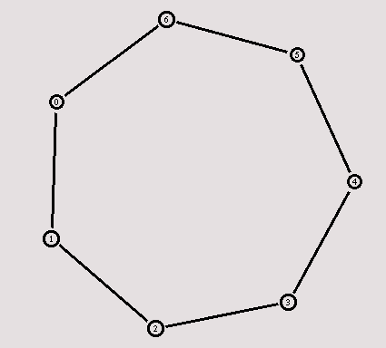

[Previous section] [Next section] [Back to the index]
In this section I am going to show you an example for a dynamic network where the routing adjusts to a link failure. On the way there I'll show you how you can keep a larger number of nodes in a Tcl array instead of giving each node its own name.
VI.1. Creating a larger topology
I suggest you call the Tcl script for this example 'example3.tcl'. You can
already insert the template from
section IV.1 into the file.
As always, the topology has to be created first, though this time we take a different approach which you will find more comfortable when you want to create larger topologies. The following code creates seven nodes and stores them in the array n().
|
Now we're going to connect the nodes to create a circular topology. The following piece of code might look a bit more complicated at first.
|
When you run the script now, the topology might look a bit strange in nam at first, but after you hit the 're-layout' button it should look like the picture below.

VI.2. Link failure
The next step is to send some data from node n(0) to node n(3).
|
If you start the script, you will see that the traffic takes the shortest path from node 0 to node 3 through nodes 1 and 2, as could be expected. Now we add another interesting feature. We let the link between node 1 and 2 (which is being used by the traffic) go down for a second.
|
Now I will show you how to use dynamic routing to solve that 'problem'. Add the following line at the beginning of your Tcl script, after the simulator object has been created.
|
Start the simulation again, and you will see how at first a lot of small packets run through the network. If you slow nam down enough to click on one of them, you will see that they are 'rtProtoDV' packets which are being used to exchange routing information between the nodes. When the link goes down again at 1.0 seconds, the routing will be updated and the traffic will be re-routed through the nodes 6, 5 and 4.

You can download the full example here.
[Previous section] [Next section] [Back to the index]
ns-users